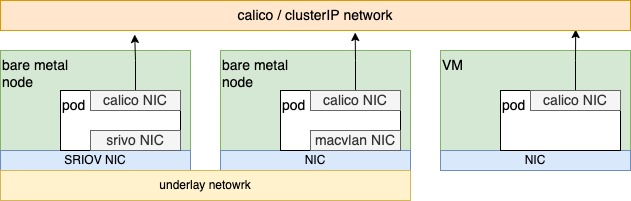

Spiderpool


English | 简体中文
Spiderpool 是 CNCF Landscape 项目。

Spiderpool 介绍
Spiderpool 是一个 kubernetes 的 underlay 网络解决方案，它提供了丰富的 IPAM 和 CNI 整合能力， 强大了开源社区中的现有 CNI 项目，让多 CNI 协同工作可真正落地，它使得 underlay CNI 能够完美地运行在 裸金属、虚拟机、任意公有云等环境下 。
为什么希望研发 Spiderpool? 当前开源社区中并未提供全面、友好、智能的 underlay 网络解决方案，Spiderpool 因此提供了很多创新的功能：
-
丰富的 IPAM 能力。提供共享、独享的 IP 池，支持应用固定 IP 地址，自动化管理独享的 IP 池，实现固定 IP 地址的动态创建、扩容、缩容和回收等。
-
overlay CNI 和 underlay CNI 协同，Pod 具备多种 CNI 网卡。Spiderpool 能够定制多个 underlay CNI 网卡的 IP 地址，调协所有网卡之间的策略路由，以确保请求向和回复向数据路径一致而避免丢包。 多 CNI 协同能有效降低集群节点的硬件一致要求。
-
增强了开源社区中的 underlay CNI，如Macvlan CNI, ipvlan CNI, SR-IOV CNI, ovs CNI 等等， 打通 Pod 和宿主机的连通性，使得 clusterIP 访问、应用本地健康检测等通信成功，并且支持 Pod 的 IP 冲突检测、网关可达性检测等。
-
不仅限于应用在数据中心的裸金属环境，同时也为 openstack、vmware 和各种公有云场景，提供了统一的 underlay CNI 解决方案。
underlay CNI
云原生网络中出现了两种技术类别，"overlay 网络方案" 和 "underlay 网络方案"， 云原生网络对于它们没有严格的定义，我们可以从很多 CNI 项目的实现原理中，简单抽象出这两种技术流派的特点，它们可以满足不同场景下的需求。
文章 对两种方案的 IPAM 和网络性能做了简单比较，能够更好说明 Spiderpool 的特点和使用场景。
为什么需要 underlay 网络解决方案？存在很多应用场景：
-
网络性能。underlay 网络方案能够提供低延时、高吞吐量的性能优势，降低宿主机的网络转发的 CPU 开销，能够满足网络性能要求高的应用，例如急速金融交易、AI 训练等应用。
-
上云成本。传统主机应用，基于主机 IP 进行服务暴露，使用多子网对接不同业务等特点。在应用迁移上云的初期，underlay 网络方案能够给应用提出更低的网络改造成本，应用可直接使用 POD IP 进行集群的东西向和南北向通信。
-
网络安全。数据中心有自身的网络安全管理需求，例如使用防火墙来管控网络通信、基于vlan 隔离通信、沿用传统的网络监控方案。underlay 网络方案使得 POD 通信数据包直接暴露在底层网络中，无需打隧道封装，可满足需求。
-
带宽独立。underlay 网络方案可为容器定制宿主机的出口网卡，从而保障底层子网的带宽隔离。可满足 kubevirt 、存储、日志等组件，传输海量的数据，避免影响其它正常的业务通信。
-
多云连接。多集群场景下，容器都对接 underlay 网络，使得多集群间的 容器网络天然联通，无需部署额外的集群网络联通组件。
架构

Spiderpool 架构如上所示，包含了以下组件：
-
Spiderpool controller: 是一组 deployment，实施了对各种 CRD 校验、状态更新、IP 回收、自动 IP 池的管理等
-
Spiderpool agent：是一组 daemonset，其帮助 Spiderpool plugin 实施 IP 分配，帮助 coordinator plugin 实施信息同步
-
Spiderpool plugin：在每个主机上的二进制插件，供 CNI 调用，实施 IP 分配
-
coordinator plugin：在每个主机上的二进制插件，供 CNI 调用，实施多网卡路由调协、IP 冲突检查、宿主机联通等
-
ifacer plugin：在每个主机上的二进制插件，帮助 macvlan 、ipvlan 等 CNI 动态创建 bond 和 vlan 子接口
除了以上 Spiderpool 自身的组件以外，还需要配合某个开源的 underlay CNI 来给 Pod 分配网卡， 可配合 Multus CNI 来实施多网卡和 CNI 配置管理。
任何支持第三方 IPAM 插件的 CNI 项目，都可以配合 Spiderpool，例如： Macvlan CNI, vlan CNI, ipvlan CNI, SR-IOV CNI, ovs CNI, Multus CNI, Calico CNI, Weave CNI
应用场景：接入 L2 网络的 underlay CNI

如上所示，Spiderpool 工作在 underlay 模式下，可配合 underlay CNI， 例如 Macvlan CNI, SR-IOV CNI , ipvlan CNI 实现：
-
为 underlay CNI 提供丰富的 IPAM 能力，包括共享/固定 IP、多网卡 IP 分配、双栈支持等
-
为 Pod 接入一个或者多个 underlay 网卡，并能调协多个 underlay CNI 网卡间的路由， 以实现请求向和回复向数据路径一致，确保网络通信畅通
-
通过额外接入 veth 网卡和路由控制，帮助开源 underlay CNI 联通宿主机，实现 clusterIP 访问、应用的本地健康检测等
当一个集群中存在多种基础设置时，如何使用单一的 underlay CNI 来部署容器呢？
-
在一个集群中，部分节点是虚拟机，例如未打开混杂转发模式的 vmware 虚拟机，而部分节点是裸金属， 接入了传统交换机网络。因此在两类节点上部署什么 CNI 方案呢？
-
在一个集群中，部分裸金属节点只具备一张 SR-IOV 高速网卡，但只能提供 64 个 VF，如何在一个节点上运行更多的 Pod？
-
在一个集群中，部分裸金属节点具备 SR-IOV 高速网卡，可以运行低延时应用，部分节点不具备 SR-IOV 高速网卡， 可以运行普通应用。但在两类节点部署上什么 CNI 方案呢？
结合 multus 的 CNI 配置管理和 Spiderpool IPAM 的通用性，可同时运行多种 underlay CNI， 充分整合集群中各种基础设施节点的资源，来解决以上问题。

例如上图所示，在同一个集群下具备不同网络能力的节点， 有的节点具备 SR-IOV 网卡，可运行 SR-IOV CNI， 有的节点具备普通的网卡，可运行 Macvlan CNI ，有的节点网络访问受限（例如二层网络转发受限的 vmware 虚拟机），可运行 ipvlan CNI。
应用场景：overlay CNI 的 Pod 加入 underlay CNI 辅助网卡

如上所示，Spiderpool 工作在 overlay 模式下，使用 multus 同时为 Pod 插入一张 overlay 网卡 （例如 Calico, Cilium ） 和若干张 underlay 网卡（例如 Macvlan CNI, SR-IOV CNI ），可实现：
-
为 underlay CNI 提供丰富的 IPAM 能力,包括共享/固定 IP、多网卡 IP 分配、双栈支持等
-
为 Pod 的多个 underlay CNI 网卡和 overlay 网卡调协路由，以实现请求向和回复向数据路径一致，确保网络通信畅通
-
以 overlay 网卡作为缺省网卡，并调协路由，通过 overlay 网卡联通本地宿主机，实现 clusterIP 访问、 应用的本地健康检测、overlay 网络流量通过 overlay 网络转发，而 underlay 网络流量通过 underlay 网卡转发。
结合 multus 的 CNI 配置管理和 Spiderpool IPAM 的通用性，可同时运行一种 overlay CNI 和 多种 underlay CNI。 例如，在同一个集群下具备不同网络能力的节点，裸金属节点上的 Pod 同时接入 overlay CNI 和 underlay CNI 网卡， 虚拟机节点上的 Pod 只提供集群东西向服务，只接入 overlay CNI 网卡。带来了如下好处：
-
把提供东西向服务的应用只接入 overlay 网卡，提供南北向服务的应用同时接入 overlay 和 underlay 网卡， 在保障集群内 Pod 连通性基础上，能够降低 underlay IP 资源的用量，减少相应的人工运维成本。
-
充分整合虚拟机和裸金属节点资源。

应用场景 ：underlay CNI 运行在公有云环境和虚拟机
在公有云、openstack、vmvare 等环境下实施 underlay CNI，通常只能使用特定环境的厂商 CNI 插件，因为这些环境通常有如下限制：
-
IAAS 网络基础设施对虚拟机网卡发出的数据包，实施了二层报头中的 MAC 限制，一方面，对源 MAC 进行安全检查， 以确保源 MAC 地址与虚拟机网卡 MAC 相同，不支持未知目的 MAC。另一方面，对目的 MAC 做了限制，只支持转发 IAAS 中所有虚拟机网卡的 MAC，不支持未知目的 MAC。通常的 CNI 插件，Pod 分配的网卡的 MAC 地址是新生成的，这使得 Pod 通信失败。
-
IAAS 网络基础设施对虚拟机网卡发出的数据包，实施了三层报头的 IP 限制，只有数据包的目的和源 IP 是在 IAAS 中分配给了虚拟机网卡时，数据包才能得到转发。通常的 CNI 插件，给 Pod 分配的 IP 地址不符合 IAAS 设置，这使得 Pod 通信失败。
Spiderpool 提供了节点拓扑的 IP 池功能，与虚拟机的相同 IP 分配设置对齐，再配合 ipvlan CNI， 从而能够为各种公有云环境提供 underlay CNI 解决方案。
快速开始
快速搭建 Spiderpool，启动一个应用，可参考快速搭建。
功能
- 对于有固定 IP 需求的应用，可以通过设置 IP 池有限的的 IP 地址集合和应用亲和性来支持。 可参考例子。
对于没有固定 IP 需求的应用，它们可以通过共享一个 IP 池， 可参考例子。
-
对于 StatefulSet 应用，Spiderpool 支持自动为每一个 Pod 固定 IP 地址，也可控制应用所有 Pod 所使用的 IP 范围。 可参考例子。
-
Subnet 功能，一方面，能够实现基础设施管理员和应用管理员的职责分离。
另一方面，能够为有固定 IP 需求的应用自动管理 IP 池，包括自动创建、扩缩容 IP、删除 固定 IP 池， 这能够减少大量的运维负担，可参考例子。 该功能除了支持 K8S 原生的应用控制器，同时支持基于 operator 实现的第三方应用控制器。 可参考例子。
-
对于一个跨子网部署的应用，支持为其不同副本分配不同子网的 IP 地址。 可参考例子。
-
支持为 Pod 多网卡分配不同子网的 IP 地址，并帮助所有网卡之间协调策略路由，以确保请求向和回复向数据路径一致，避免丢包。
对于 Pod 具备多个 underlay CNI 网卡场景，可参考例子。
对于 Pod 具备一个 overlay 网卡和多个 underlay CNI 网卡场景， 可参考例子。
-
可以设置集群级别的默认 IP 池，也可租户级别的默认 IP 池。同时，IP 池既可以被整个集群共享， 也可被限定为被一个租户使用。可参考例子。
-
对于开源的 Macvlan CNI, vlan CNI, ipvlan CNI, SR-IOV CNI, ovs CNI 等， 可帮助解决 ClusterIP 访问、Pod 宿主机健康检查等问题。 可参考例子。
并且，能够帮助实施 IP 地址冲突检测、网关可达性检测，以保证 Pod 通信正常，可参考例子。
-
基于节点拓扑的 IP 池功能，支持运行在裸金属例子、 vmware 虚拟机例子、 openstack 虚拟机例子、 公有云例子等场景。
-
在 Pod 启动时，能够在宿主机上动态创建 BOND 接口和 VLAN 子接口，以帮助 Macvlan CNI 和 ipvlan CNI 准备 master 接口。可参考例子。
-
可以通过 IP 池和 Pod annotaiton 等多种方式定制自定义路由，可参考例子。
-
以最佳实践的 CNI 配置来便捷地生成 Multus NetworkAttachmentDefinition 实例，并且保证其正确的 JSON 格式来提高使用体验。 可参考例子。
-
应用可设置多个 IP 池，实现 IP 资源的备用效果。可参考例子。
-
设置全局的预留 IP，让 IPAM 不分配出这些 IP 地址，这样能避免与集群外部的已用 IP 冲突。 可参考例子。
-
分配和释放 IP 地址的高效性能，可参考报告。
-
合理的 IP 回收机制设计，使得集群或应用在故障恢复过程中，能够及时分配到 IP 地址。可参考例子。
-
所有的功能都能够在 ipv4-only、ipv6-only、dual-stack 场景下工作。可参考例子。
-
支持 AMD64 和 ARM64